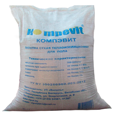

Сухая засыпка
Технические характеристики:
Насыпная плотность 500-600 кг/м3; Прочность при сдавливании в цилиндре - 2,5 – 3,3 Мпа; Влажность менее 0,5%.; Коэффициент теплопроводности – не более 0,12 Вт/мК.
Преимущества системы сухих полов:
Быстрая укладка - бригада из 2-х человек за 8-ми часовую смену укладывает 50-60 квадратных метров сухой стяжки.
Монтаж финишного покрытия производится сразу же после завершения работ по устройству сухой стяжки.
Небольшой вес позволяет при строительстве и ремонте снижать нагрузки на фундамент и перекрытия.
Все работы, связанные с устройством сборного основания пола, производятся с применением сухих процессов, полы можно собирать после завершения основных работ по оштукатуриванию. Укладка пола возможна после отделки стен.
Работы можно проводить при низких температурах (менее -5°С), так как только на время схватывания клея необходимо обеспечит положительную температуру.
Применение сухой засыпки «Компэвит»и сборных оснований пола из листов КNAUF позволяет получить очень ровное и прочное основание, выдерживающее равномерно распределённые эксплуатационные нагрузки на пол до 1000 кг/м2 и точечные нагрузки до 500 кг/м2.Калькулятор расхода
ширина:
глубина:
высота:
всего мешков: